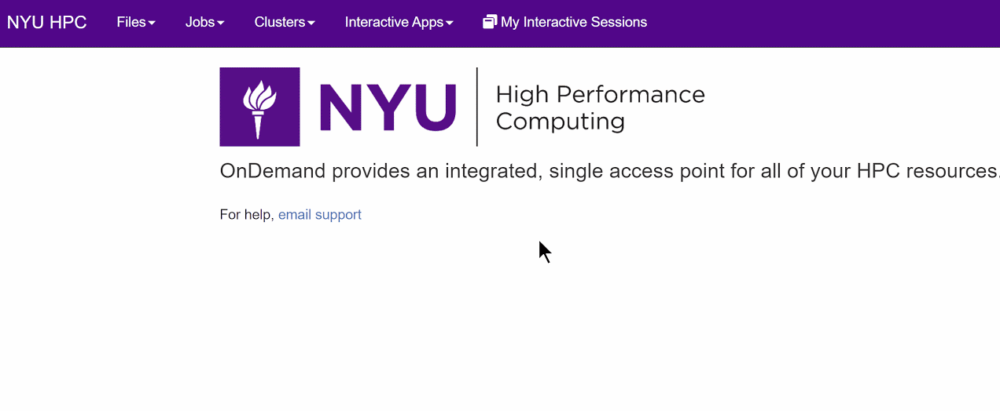
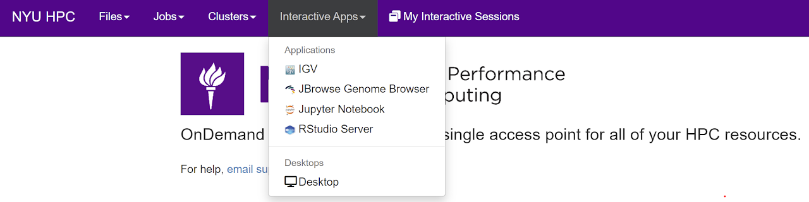

Access
There are several ways to interact with the Greene HPC cluster. Similar to other Linux clusters, the most common method of connection is via a Command Line Interface (CLI).

Outside NYU Network
If you are connecting from a remote location that is not on the NYU network (your home for example), you have to use VPN to connect to NYU network.
Set up your computer to use the NYU VPN, a detailed guide can be found here.
Once you’ve created a VPN connection, you can proceed as if you were connected to the NYU net.
Within NYU Network
If you are connected to NYU network directly or through a VPN then you have following options to access HPC cluster:
SSH
You can simply ssh in your local terminal:
ssh <NetID>@greene.hpc.nyu.edu
Enter the same password which you use to login into your NYU account and you are good to go.
Warning
Whenever you login, you land up on one of the login nodes and you should not run compute heavy jobs on login nodes directly, to avoid HPC account termination.
Saving SSH Keys
Instead of typing password every time you need to log in, you can also save ssh keys on your HPC account.
Caution
Only save keys from the computer you trust.
Generate ssh keys on your local machine.
ssh-keygen -f my_ssh_key.txt
Follow the prompt, just hit Enter to go with default settings.
Copy the key to HPC server.
ssh-copy-id -i my_ssh_key.txt <NetID>@greene.hpc.nyu.edu
Done, now you won’t need to type your password again from your current machine.
Web Interface
The HPC Web interface also known as OOD (built upon Open OnDemand ) is an interactive interface to remote computing resources which helps computational researchers and students efficiently utilize remote computing resources. The OOD Web Interface is one stop solution for all your HPC needs from accessing your files to submitting and viewing your jobs to running an interactive app.
Features Include:
Easy file management - upload and download files, view HTML and pictures without downloading
Command-line shell access without any SSH client locally installed
Job management and monitoring
Full Linux desktop experience without X11
Interactive Apps such as JupyterHub and RStudio without the need for port forwarding
Connection to OOD
To access interactive OOD interface visit: https://ood.hpc.nyu.edu (VPN Required), enter your NetID and password and click Log in with your NYU account.

Access the shell
Under the clusters menu you can select the Greene Shell Access option to access the Linux shell. No local SSH client is required.
{kind=link}
Common Error
A common issue that can occur is receiving an error that the Open OnDemand page cannot be reached. Sometimes this can indicate that the service is down, but often this is an issue with the the local browser cache. You can test this by opening a private browser window and seeing if OOD will load. If it does, try deleting the cache for https://ood.hpc.nyu.edu in your browser history to resolve this issue.
Interactive Applications
GUI based applications are accessible without the need for port or X11 forwarding. Select the Interactive Apps menu, select the desired application, and submit the job based on required resources and options.
{kind=link}